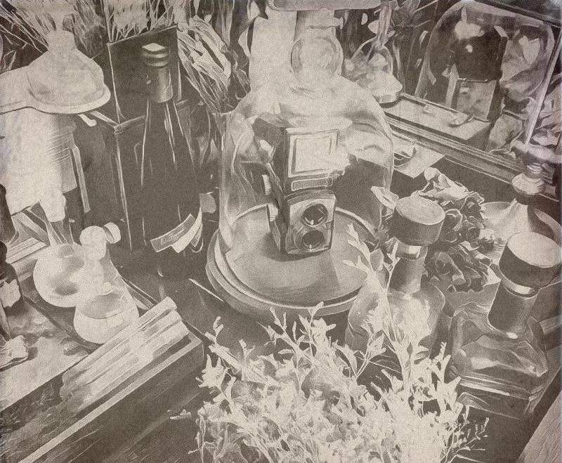
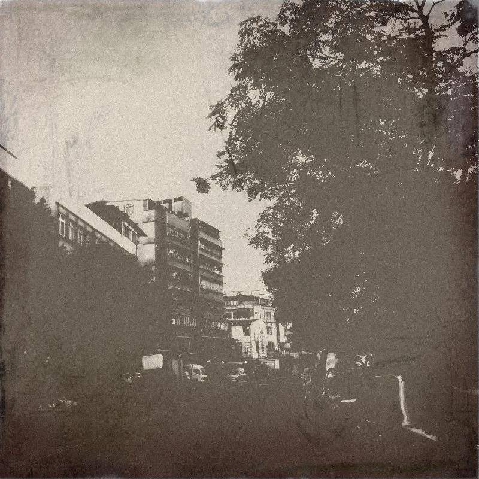

賣語者老闆
2017-09-09

「拿字丟人，是我最新解悶的遊戲。」
「唉呦!」一位上班族男子摸摸被撞擊的頭，左右張望，在疼痛之餘卻想起小時候一個一直被父母說是他捏造的妖怪朋友，惆悵的站了半响，電話響起，他邊接邊快步地衝向簽約的會所。
拿字丟人，是我最新解悶的遊戲。
當你有一間店面，接著有一個看似溫柔卻精明異常的太太時，生活就會時而戰戰兢兢，時而恬淡閒暇，至於哪種比較多，結過婚的應該都知道。不，這不是抱怨，你懂得，但紓解壓力還是需要的。
老闆是陌生人對我的稱呼，熟識的人都叫我老莊，熟到爛掉的就叫「ㄟ」，至於我太太叫我「那個誰」，她的語氣有時讓我覺得門口這張搖晃的小藤椅，才是度過餘生的好地方，反正那個誰管他是誰，但請別懷疑我愛太太的心。（因為這是則故事，很有可能被她看見。）
你問我我賣甚麼？看我一身文裝，戴個眼鏡，書生氣都從肚腩滿出來還沒猜到？算了，也沒人猜得到，因為只有在黃昏或清晨不小心迷路，才有機會到這裡。
喔，不過如果我太太看上你的故事，請隨時小心，若看見有個清秀的女子闖進你的大腦，並在一扇窗後面拿杯咖啡招手的時候，你跑都跑不掉。
忘了說，別吃她的蘋果，什麼？吃了？那祝你平安喜樂。
對了，我剛剛是不是沒說，我是賣故事的，精準地說，我太太拿(搶?)故事，我賣故事。
